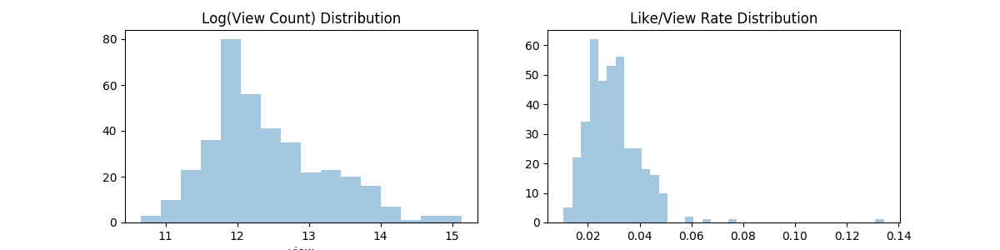
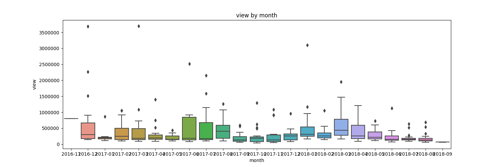
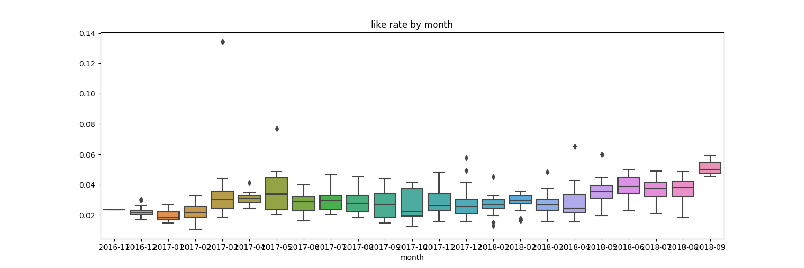
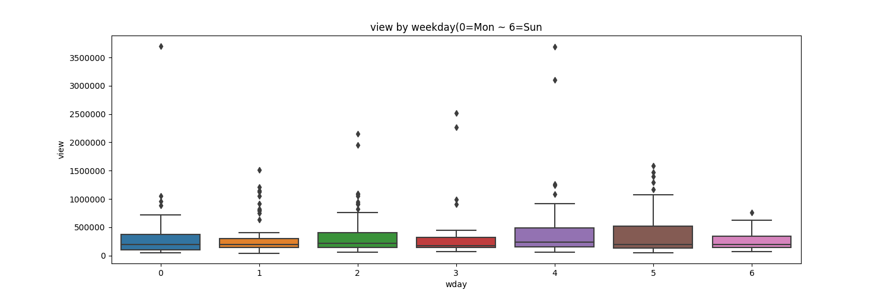

Target: log_view
Data




Model
Model Info: 1
| Model: |
OLS |
Adj. R-squared: |
0.251 |
| Dependent Variable: |
view |
AIC: |
927.5397 |
| Date: |
2018-09-05 18:00 |
BIC: |
1600.8584 |
| No. Observations: |
379 |
Log-Likelihood: |
-292.77 |
| Df Model: |
170 |
F-statistic: |
1.744 |
| Df Residuals: |
208 |
Prob (F-statistic): |
6.80e-05 |
| R-squared: |
0.588 |
Scale: |
0.50011 |
Coef List
|
Coef. |
Std.Err. |
t |
P>|t| |
[0.025 |
0.975] |
| 2016-11 |
2.158 |
1.216 |
1.775 |
0.077 |
-0.239 |
4.554 |
| 2016-12 |
0.918 |
0.197 |
4.654 |
0.000 |
0.529 |
1.307 |
| 2017-01 |
0.798 |
0.360 |
2.220 |
0.028 |
0.089 |
1.507 |
| 2017-02 |
0.856 |
0.269 |
3.186 |
0.002 |
0.326 |
1.386 |
| 2017-03 |
0.688 |
0.222 |
3.105 |
0.002 |
0.251 |
1.125 |
| 2017-04 |
0.565 |
0.262 |
2.156 |
0.032 |
0.048 |
1.082 |
| 2017-05 |
0.208 |
0.215 |
0.965 |
0.336 |
-0.217 |
0.633 |
| 2017-06 |
0.634 |
0.266 |
2.382 |
0.018 |
0.109 |
1.158 |
| 2017-07 |
0.209 |
0.224 |
0.932 |
0.352 |
-0.233 |
0.652 |
| 2017-08 |
0.160 |
0.244 |
0.656 |
0.513 |
-0.321 |
0.640 |
| 2017-09 |
-0.146 |
0.231 |
-0.632 |
0.528 |
-0.601 |
0.309 |
| 2017-10 |
-0.077 |
0.208 |
-0.368 |
0.713 |
-0.487 |
0.334 |
| 2017-11 |
0.012 |
0.214 |
0.057 |
0.954 |
-0.410 |
0.434 |
| 2017-12 |
0.219 |
0.249 |
0.881 |
0.380 |
-0.271 |
0.709 |
| 2018-01 |
0.966 |
0.200 |
4.839 |
0.000 |
0.573 |
1.360 |
| 2018-02 |
0.465 |
0.213 |
2.185 |
0.030 |
0.046 |
0.884 |
| 2018-03 |
1.055 |
0.189 |
5.597 |
0.000 |
0.684 |
1.427 |
| 2018-04 |
0.446 |
0.244 |
1.831 |
0.068 |
-0.034 |
0.927 |
| 2018-05 |
0.305 |
0.193 |
1.575 |
0.117 |
-0.077 |
0.686 |
| 2018-06 |
0.042 |
0.214 |
0.197 |
0.844 |
-0.380 |
0.464 |
| 2018-07 |
-0.358 |
0.232 |
-1.539 |
0.125 |
-0.816 |
0.101 |
| 2018-08 |
0.343 |
0.254 |
1.350 |
0.179 |
-0.158 |
0.844 |
| Mon |
1.196 |
0.166 |
7.211 |
0.000 |
0.869 |
1.523 |
| Tue |
1.568 |
0.106 |
14.772 |
0.000 |
1.359 |
1.777 |
| Wed |
1.604 |
0.107 |
15.013 |
0.000 |
1.393 |
1.815 |
| Thr |
1.369 |
0.147 |
9.323 |
0.000 |
1.079 |
1.658 |
| Fri |
1.669 |
0.107 |
15.608 |
0.000 |
1.458 |
1.880 |
| Sat |
1.540 |
0.131 |
11.801 |
0.000 |
1.283 |
1.798 |
| Sun |
1.521 |
0.131 |
11.603 |
0.000 |
1.263 |
1.780 |
| アイ |
-0.040 |
0.241 |
-0.166 |
0.868 |
-0.514 |
0.434 |
| キズナ |
-0.017 |
0.260 |
-0.064 |
0.949 |
-0.530 |
0.496 |
| AI |
0.028 |
0.183 |
0.151 |
0.880 |
-0.333 |
0.388 |
| 私 |
0.071 |
0.166 |
0.427 |
0.670 |
-0.256 |
0.398 |
| LIVE |
-0.100 |
0.263 |
-0.382 |
0.703 |
-0.619 |
0.418 |
| みんな |
-0.026 |
0.251 |
-0.102 |
0.919 |
-0.520 |
0.469 |
| 人 |
-0.693 |
0.507 |
-1.368 |
0.173 |
-1.692 |
0.306 |
| ゲーム |
0.469 |
0.246 |
1.903 |
0.058 |
-0.017 |
0.955 |
| 踊る |
0.145 |
0.282 |
0.516 |
0.607 |
-0.410 |
0.701 |
| 検証 |
0.429 |
0.302 |
1.420 |
0.157 |
-0.167 |
1.025 |
| 歌う |
0.514 |
0.307 |
1.674 |
0.096 |
-0.091 |
1.120 |
| VR |
-0.263 |
0.279 |
-0.944 |
0.346 |
-0.813 |
0.287 |
| ついに |
-0.394 |
0.308 |
-1.278 |
0.203 |
-1.001 |
0.214 |
| YouTuber |
-0.095 |
0.330 |
-0.287 |
0.774 |
-0.746 |
0.556 |
| Channel |
0.078 |
0.278 |
0.280 |
0.779 |
-0.470 |
0.625 |
| 新 |
-0.291 |
0.330 |
-0.882 |
0.379 |
-0.943 |
0.360 |
| 結果 |
0.317 |
0.300 |
1.056 |
0.292 |
-0.275 |
0.909 |
| 動画 |
-0.046 |
0.291 |
-0.157 |
0.875 |
-0.620 |
0.529 |
| 万 |
1.111 |
0.658 |
1.688 |
0.093 |
-0.187 |
2.408 |
| バーチャル |
0.548 |
0.356 |
1.539 |
0.125 |
-0.154 |
1.251 |
| 愛 |
0.008 |
0.281 |
0.030 |
0.976 |
-0.546 |
0.563 |
| スナック |
0.008 |
0.281 |
0.030 |
0.976 |
-0.546 |
0.563 |
| あなた |
-0.162 |
0.286 |
-0.566 |
0.572 |
-0.725 |
0.401 |
| クイズ |
-0.348 |
0.423 |
-0.823 |
0.411 |
-1.182 |
0.486 |
| 挑戦 |
0.015 |
0.343 |
0.045 |
0.964 |
-0.661 |
0.691 |
| できる |
0.118 |
0.455 |
0.259 |
0.796 |
-0.780 |
1.016 |
| キス |
1.011 |
0.747 |
1.355 |
0.177 |
-0.460 |
2.483 |
| チャレンジ |
0.491 |
0.619 |
0.794 |
0.428 |
-0.729 |
1.711 |
| part |
-0.092 |
0.721 |
-0.127 |
0.899 |
-1.513 |
1.329 |
| コラボ |
-0.085 |
0.386 |
-0.221 |
0.825 |
-0.847 |
0.676 |
| ガチ |
-0.493 |
0.533 |
-0.924 |
0.356 |
-1.544 |
0.558 |
| 登録者 |
1.466 |
0.725 |
2.022 |
0.044 |
0.037 |
2.895 |
| LINE |
-0.303 |
0.679 |
-0.447 |
0.656 |
-1.642 |
1.035 |
| スタンプ |
0.256 |
0.663 |
0.385 |
0.700 |
-1.052 |
1.563 |
| 質問 |
-0.116 |
0.497 |
-0.234 |
0.815 |
-1.096 |
0.863 |
| 流 |
-0.345 |
0.359 |
-0.961 |
0.338 |
-1.052 |
0.363 |
| 本当 |
-0.244 |
0.386 |
-0.632 |
0.528 |
-1.004 |
0.516 |
| アプリ |
0.273 |
0.405 |
0.675 |
0.501 |
-0.526 |
1.073 |
| 必見 |
-0.721 |
0.450 |
-1.603 |
0.110 |
-1.609 |
0.166 |
| 祝 |
-0.127 |
0.372 |
-0.342 |
0.733 |
-0.861 |
0.607 |
| ナアイ |
-0.713 |
0.804 |
-0.887 |
0.376 |
-2.299 |
0.873 |
| オンライン |
-0.372 |
0.217 |
-1.711 |
0.089 |
-0.800 |
0.057 |
| アヴァベル |
-0.372 |
0.217 |
-1.711 |
0.089 |
-0.800 |
0.057 |
| 絶対 |
0.147 |
0.475 |
0.308 |
0.758 |
-0.791 |
1.084 |
| 説 |
-0.372 |
0.471 |
-0.789 |
0.431 |
-1.301 |
0.557 |
| インタビュー |
-1.277 |
1.092 |
-1.169 |
0.244 |
-3.430 |
0.876 |
| テスト |
-0.296 |
0.428 |
-0.692 |
0.490 |
-1.140 |
0.548 |
| 紹介 |
0.329 |
0.517 |
0.637 |
0.525 |
-0.690 |
1.348 |
| 突破 |
-0.738 |
0.620 |
-1.190 |
0.235 |
-1.959 |
0.484 |
| チャンネル |
-0.923 |
0.664 |
-1.390 |
0.166 |
-2.232 |
0.386 |
| 描く |
1.013 |
0.470 |
2.156 |
0.032 |
0.087 |
1.939 |
| 裁判 |
-0.047 |
0.121 |
-0.392 |
0.695 |
-0.285 |
0.191 |
| 無罪 |
-0.047 |
0.121 |
-0.392 |
0.695 |
-0.285 |
0.191 |
| 有罪 |
-0.047 |
0.121 |
-0.392 |
0.695 |
-0.285 |
0.191 |
| りんな |
-0.010 |
0.404 |
-0.024 |
0.981 |
-0.806 |
0.786 |
| スーパー |
-0.450 |
0.480 |
-0.937 |
0.350 |
-1.396 |
0.497 |
| 達成 |
-0.472 |
0.640 |
-0.737 |
0.462 |
-1.733 |
0.790 |
| 作る |
-0.832 |
0.419 |
-1.985 |
0.048 |
-1.658 |
-0.006 |
| 記録 |
0.671 |
1.030 |
0.652 |
0.515 |
-1.359 |
2.702 |
| 幻獣 |
-0.238 |
0.137 |
-1.740 |
0.083 |
-0.507 |
0.032 |
| クリプトラクト |
-0.238 |
0.137 |
-1.740 |
0.083 |
-0.507 |
0.032 |
| 契約 |
-0.238 |
0.137 |
-1.740 |
0.083 |
-0.507 |
0.032 |
| 美少女 |
-0.249 |
0.524 |
-0.476 |
0.635 |
-1.282 |
0.784 |
| 出る |
0.360 |
0.621 |
0.579 |
0.563 |
-0.865 |
1.584 |
| つく |
-0.335 |
0.613 |
-0.546 |
0.586 |
-1.544 |
0.874 |
| 企画 |
-0.449 |
0.552 |
-0.813 |
0.417 |
-1.536 |
0.639 |
| まさか |
0.026 |
0.427 |
0.062 |
0.951 |
-0.815 |
0.868 |
| プレゼント |
-0.042 |
0.510 |
-0.082 |
0.935 |
-1.046 |
0.963 |
| 目指す |
-0.382 |
0.439 |
-0.871 |
0.385 |
-1.248 |
0.483 |
| バトル |
0.104 |
0.525 |
0.198 |
0.843 |
-0.931 |
1.140 |
| あげる |
-0.206 |
0.504 |
-0.409 |
0.683 |
-1.200 |
0.788 |
| 方法 |
0.639 |
0.482 |
1.326 |
0.186 |
-0.311 |
1.589 |
| 振り返る |
0.110 |
0.489 |
0.225 |
0.822 |
-0.855 |
1.075 |
| 英語 |
0.035 |
0.414 |
0.086 |
0.932 |
-0.780 |
0.851 |
| 朗報 |
0.246 |
0.597 |
0.412 |
0.681 |
-0.931 |
1.423 |
| 欲しい |
0.466 |
0.512 |
0.910 |
0.364 |
-0.544 |
1.477 |
| 落とす |
0.787 |
0.467 |
1.683 |
0.094 |
-0.135 |
1.708 |
| 漢字 |
0.065 |
0.423 |
0.155 |
0.877 |
-0.769 |
0.900 |
| 会議 |
0.021 |
0.407 |
0.051 |
0.960 |
-0.782 |
0.823 |
| 全力 |
-0.080 |
0.497 |
-0.161 |
0.872 |
-1.061 |
0.900 |
| 診断 |
-0.286 |
0.569 |
-0.503 |
0.616 |
-1.408 |
0.836 |
| アレ |
0.450 |
0.483 |
0.931 |
0.353 |
-0.503 |
1.402 |
| 応援 |
-0.836 |
0.444 |
-1.882 |
0.061 |
-1.713 |
0.040 |
| 発見 |
-0.428 |
0.438 |
-0.978 |
0.329 |
-1.291 |
0.435 |
| News |
-0.495 |
0.221 |
-2.244 |
0.026 |
-0.930 |
-0.060 |
| Vol |
-0.495 |
0.221 |
-2.244 |
0.026 |
-0.930 |
-0.060 |
| 体力 |
0.347 |
0.244 |
1.423 |
0.156 |
-0.134 |
0.827 |
| 測定 |
0.347 |
0.244 |
1.423 |
0.156 |
-0.134 |
0.827 |
| 知能 |
0.058 |
0.225 |
0.256 |
0.798 |
-0.386 |
0.501 |
| 人工 |
0.058 |
0.225 |
0.256 |
0.798 |
-0.386 |
0.501 |
| ギネス |
-1.087 |
1.295 |
-0.840 |
0.402 |
-3.640 |
1.465 |
| 関西 |
-0.308 |
0.731 |
-0.422 |
0.674 |
-1.750 |
1.133 |
| PANORA |
0.637 |
1.324 |
0.481 |
0.631 |
-1.973 |
3.247 |
| ブラック |
0.295 |
0.619 |
0.477 |
0.634 |
-0.926 |
1.517 |
| Twitter |
0.233 |
0.961 |
0.242 |
0.809 |
-1.661 |
2.127 |
| 怖い |
0.353 |
0.617 |
0.572 |
0.568 |
-0.863 |
1.570 |
| Kizuna |
-0.153 |
0.476 |
-0.322 |
0.748 |
-1.091 |
0.785 |
| 遊ぶ |
-0.710 |
0.516 |
-1.376 |
0.170 |
-1.728 |
0.307 |
| 受ける |
-0.085 |
0.622 |
-0.136 |
0.892 |
-1.310 |
1.141 |
| サムネ |
-0.128 |
0.548 |
-0.234 |
0.815 |
-1.208 |
0.952 |
| 言葉 |
0.056 |
0.511 |
0.109 |
0.913 |
-0.952 |
1.063 |
| 世界 |
-1.531 |
0.616 |
-2.484 |
0.014 |
-2.746 |
-0.316 |
| グッズ |
-0.227 |
0.542 |
-0.418 |
0.676 |
-1.295 |
0.842 |
| 募集 |
-0.532 |
0.605 |
-0.879 |
0.381 |
-1.725 |
0.661 |
| 全部 |
0.443 |
0.580 |
0.764 |
0.446 |
-0.700 |
1.587 |
| 今年 |
-0.151 |
0.687 |
-0.220 |
0.826 |
-1.505 |
1.202 |
| ラブライブ |
1.563 |
0.520 |
3.007 |
0.003 |
0.538 |
2.588 |
| 教える |
-0.517 |
0.564 |
-0.916 |
0.360 |
-1.628 |
0.595 |
| Party |
0.230 |
0.257 |
0.893 |
0.373 |
-0.278 |
0.737 |
| 大公開 |
1.121 |
0.469 |
2.388 |
0.018 |
0.196 |
2.046 |
| Birthday |
0.230 |
0.257 |
0.893 |
0.373 |
-0.278 |
0.737 |
| コーナー |
0.792 |
0.859 |
0.922 |
0.357 |
-0.901 |
2.485 |
| 手 |
-0.176 |
0.701 |
-0.251 |
0.802 |
-1.558 |
1.206 |
| 公開 |
-0.368 |
0.556 |
-0.662 |
0.509 |
-1.464 |
0.728 |
| 月 |
-0.981 |
0.559 |
-1.755 |
0.081 |
-2.083 |
0.121 |
| 物申す |
0.549 |
0.558 |
0.983 |
0.327 |
-0.552 |
1.649 |
| こんな |
0.719 |
0.498 |
1.444 |
0.150 |
-0.262 |
1.700 |
| 考える |
-0.188 |
0.635 |
-0.297 |
0.767 |
-1.440 |
1.063 |
| 名作 |
-0.650 |
0.779 |
-0.834 |
0.405 |
-2.185 |
0.886 |
| まつ |
-0.097 |
0.463 |
-0.209 |
0.834 |
-1.010 |
0.816 |
| 放送 |
1.194 |
0.843 |
1.416 |
0.158 |
-0.468 |
2.855 |
| 写真 |
-0.033 |
0.669 |
-0.049 |
0.961 |
-1.352 |
1.286 |
| 声 |
1.210 |
0.535 |
2.262 |
0.025 |
0.155 |
2.264 |
| 少女 |
-1.318 |
0.698 |
-1.890 |
0.060 |
-2.693 |
0.057 |
| 配信 |
0.069 |
0.885 |
0.078 |
0.938 |
-1.677 |
1.814 |
| ねんどろいど |
-0.031 |
0.553 |
-0.055 |
0.956 |
-1.121 |
1.060 |
| JK |
-0.262 |
0.552 |
-0.474 |
0.636 |
-1.349 |
0.826 |
| うろ覚え |
-0.133 |
0.672 |
-0.198 |
0.843 |
-1.459 |
1.192 |
| 当てる |
1.233 |
0.633 |
1.949 |
0.053 |
-0.014 |
2.480 |
| いっしょ |
-0.802 |
0.574 |
-1.399 |
0.163 |
-1.933 |
0.328 |
| 流行 |
-0.034 |
0.242 |
-0.140 |
0.889 |
-0.511 |
0.443 |
| 語 |
-0.034 |
0.242 |
-0.140 |
0.889 |
-0.511 |
0.443 |
| 子 |
1.088 |
0.654 |
1.664 |
0.098 |
-0.201 |
2.378 |
| ビジネス |
-0.067 |
0.621 |
-0.108 |
0.914 |
-1.291 |
1.157 |
| Man |
0.630 |
0.322 |
1.954 |
0.052 |
-0.005 |
1.265 |
| Anime |
0.630 |
0.322 |
1.954 |
0.052 |
-0.005 |
1.265 |
| 記念 |
-1.271 |
0.915 |
-1.389 |
0.166 |
-3.075 |
0.532 |
| ホラー |
0.370 |
0.500 |
0.741 |
0.460 |
-0.615 |
1.356 |
| 降臨 |
1.138 |
0.541 |
2.102 |
0.037 |
0.071 |
2.206 |
| 人間 |
-0.892 |
0.570 |
-1.564 |
0.119 |
-2.015 |
0.232 |
| 歌 |
0.644 |
0.609 |
1.056 |
0.292 |
-0.558 |
1.845 |
| bokete |
-0.321 |
0.493 |
-0.652 |
0.515 |
-1.292 |
0.650 |
| 知る |
0.530 |
0.462 |
1.147 |
0.253 |
-0.381 |
1.440 |
| 講座 |
0.289 |
0.527 |
0.549 |
0.584 |
-0.749 |
1.327 |
| バカゲー |
1.002 |
0.748 |
1.338 |
0.182 |
-0.474 |
2.477 |
| 回避 |
0.206 |
0.365 |
0.564 |
0.573 |
-0.514 |
0.926 |
| フラ |
0.206 |
0.365 |
0.564 |
0.573 |
-0.514 |
0.926 |
| 修羅場 |
1.096 |
0.910 |
1.205 |
0.229 |
-0.697 |
2.890 |
| 浮気 |
-0.543 |
0.926 |
-0.586 |
0.559 |
-2.369 |
1.283 |
| ASMR |
1.151 |
0.466 |
2.470 |
0.014 |
0.232 |
2.070 |
| 対決 |
1.655 |
0.699 |
2.367 |
0.019 |
0.277 |
3.034 |
| 方 |
0.483 |
0.485 |
0.994 |
0.321 |
-0.474 |
1.439 |
| Streaming |
-0.846 |
0.606 |
-1.396 |
0.164 |
-2.041 |
0.349 |
| 絵描き |
-0.991 |
0.608 |
-1.630 |
0.105 |
-2.190 |
0.208 |
| 友達 |
-0.150 |
0.530 |
-0.282 |
0.778 |
-1.195 |
0.896 |
| 関東 |
-0.985 |
0.730 |
-1.350 |
0.178 |
-2.424 |
0.453 |
| const |
10.468 |
0.098 |
106.499 |
0.000 |
10.274 |
10.662 |
Model Info: 2
| Omnibus: |
22.145 |
Durbin-Watson: |
1.919 |
| Prob(Omnibus): |
0.000 |
Jarque-Bera (JB): |
27.634 |
| Skew: |
0.498 |
Prob(JB): |
0.000 |
| Kurtosis: |
3.870 |
Condition No.: |
21053462660782044 |
Important Words (p_value < 0.1)
| word |
Coef |
| 世界 |
-1.531 |
| 少女 |
-1.318 |
| 月 |
-0.981 |
| 応援 |
-0.836 |
| 作る |
-0.832 |
| News |
-0.495 |
| Vol |
-0.495 |
| オンライン |
-0.372 |
| アヴァベル |
-0.372 |
| クリプトラクト |
-0.238 |
| 契約 |
-0.238 |
| 幻獣 |
-0.238 |
| ゲーム |
0.469 |
| 歌う |
0.514 |
| Anime |
0.630 |
| Man |
0.630 |
| 落とす |
0.787 |
| 描く |
1.013 |
| 子 |
1.088 |
| 万 |
1.111 |
| 大公開 |
1.121 |
| 降臨 |
1.138 |
| ASMR |
1.151 |
| 声 |
1.210 |
| 当てる |
1.233 |
| 登録者 |
1.466 |
| ラブライブ |
1.563 |
| 対決 |
1.655 |